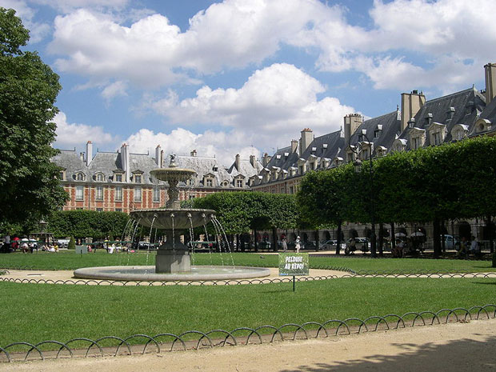

Paris is known for its many elegant parks, but the city boasts a large number of very diverse parks. While some date back to the 17th century, many modern parks have been created in the last couple of decades. Even though Paris has a dense urban structure, the city boasts more than 400 parks.
The Paris squares or places that we want to peak at are those that are more secluded - somewhat like a park in miniature. These will be the locations that can give you respite from a busy day. As you restore your spirit, enjoy the French architecture around the squares, the beautiful plants and the peaceful quiet.

The Place des Vosges (French pronunciation: [plas de voʒ]) is the oldest planned square in Paris. It is located in the Marais district, and it straddles the dividing-line between the 3rd and 4th arrondissements of Paris.
Originally known as the Place Royale, the Place des Vosges was built by Henri IV from 1605 to 1612. A true square (140 m x 140 m), it embodied the first European program of royal city planning. It was built on the site of the Hôtel des Tournelles and its gardens: at a tournament at the Tournelles, a royal residence, Henri II was wounded and died. Catherine de Medicis had the Gothic pile demolished, and she removed to the Louvre.
The Place des Vosges, inaugurated in 1612 with a grand carrousel to celebrate the wedding of Louis XIII and Anne of Austria, is the prototype of all the residential squares of European cities that were to come. What was new about the Place Royale in 1612 was that the housefronts were all built to the same design, probably by Baptiste du Cerceau, of red brick with strips of stone quoins over vaulted arcades that stand on square pillars. The steeply-pitched blue slate roofs are pierced with discreet small-paned dormers above the pedimented dormers that stand upon the cornices. Only the north range was built with the vaulted ceilings that the "galleries" were meant to have. Two pavilions that rise higher than the unified roofline of the square center the north and south faces and offer access to the square through triple arches. Though they are designated the Pavilion of the King and of the Queen, no royal personage has ever lived in the aristocratic square. The Place des Vosges initiated subsequent developments of Paris that created a suitable urban background for the French aristocracy.
Before the square was completed, Henri IV ordered the Place Dauphine to be laid out. Within a mere five-year period the king oversaw an unmatched building scheme for the ravaged medieval city: additions to the Louvre, the Pont Neuf, and the Hôpital Saint Louis as well as the two royal squares.
Cardinal Richelieu had an equestrian bronze of Louis XIII erected in the center (there were no garden plots until 1680). The original was melted down in the Revolution; the present version, begun in 1818 by Louis Dupaty and completed by Jean-Pierre Cortot, replaced it in 1825. The square was renamed in 1799 when the département of the Vosges became the first to pay taxes supporting a campaign of the Revolutionary army. The Restoration returned the old royal name, but the short-lived Second Republic restored the revolutionary one in 1848.
Today the square is planted with a bosquet of mature lindens set in grass and gravel, surrounded by clipped lindens.